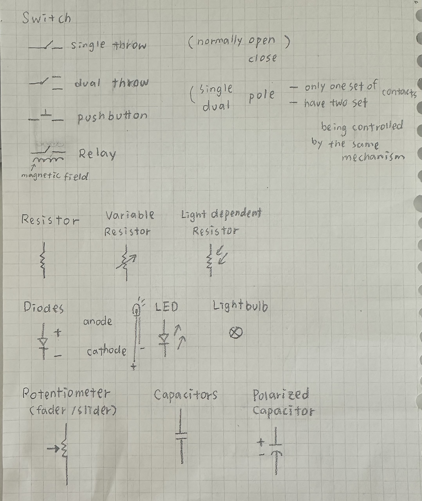

Electrical Knowledge
Feedback
Guides
Electronic Symbol
Video: Intro to Schematics
Videos: Basic symbols
Electronic Symbol
Video: Intro to Schematics
Videos: Basic symbols
↖ It may be useful in the future ↗
Electricity: the Basics
Definitions
- Electricity - the flow of electrical energy through conductive materials.
- Electrical Circuit - power source + convert the electrical energy into other forms of energy. (a source of electrical energy and a load that uses the energy)
- Short Circuit - A circuit with no load is called a short circuit
- Sensors - Other froms of energy -> Electrical energy
components that covert other forms of energy into electrical energy. (switches, knobs, light, motion sensors) - Actuators - Electrical energy -> Other froms of energy
components that convert electrical energy into other forms. (Light bulbs, motors, LEDs, heaters) - Electronic - reading changes in electrical properties as information. (EG: Microphone - sound pressure waves in the air -> electrical voltage)
- Direct Current (DC), and Alternating Current (AC) - In a DC circuit, current always flows one direction. In an AC circuit, the direction of current flow is reversed in a regular repeating cycle
- Transduction - change one energy into anthor
- Transducers - devices that do it ⤴
Components
- Conductors - are materials through which electrical current moves freely
- Insulators - Insulators are materials which prevent the flow of electricity
- Resistors - control the flow of current
Thermistors - change resistance in reaction to varying temperature
Photoresistors - change resistance in reaction to varying light
Flex sensors - change resistance in reaction to being bent or flexed
Force sensing resistors - change resistance in reaction to a force placed upon them - Capacitors - store up electricity while current is flowing into them, then release the energy when the incoming current is removeds ( Sometimes they are polarized )
- Diodes - permit the flow of electricity in one direction, and block it in the other direction
- Switches and pushbuttons - control the flow of current through a junction in a circuit
- Transistors and relays - electrical switching devices
- Piezoelectric devices - create a varying voltage in reaction to slight changes in pressure.
Relationships
- Voltage (Volts) - a measure of the difference in electrical potential energy between two points in a circuit. (the potential between two point of move charges like electrons)
- Current (Amperes, or Amps) - a measure of the magnitude of the flow of electrons through a particular point in a circuit. (movement of those charges)
- Resistance (Ohms) - a measure of a material's ability to oppose the flow of electricity. (resistance to that movement)
- V = I * R (Volts = Amps * Ohms) -> For a given voltage, more resistance means less current
- Electrical power (watts)
- P = V * I (Watts = Volts * Amps)
- Resistors in series - Rtotal = R1 + R2 + R3…
- Resistors in parallel -s I 1 + I 2 = I total 1/Rtotal = 1/R1 + 1/R2 + 1/R3…
Rules that explain how electrical energy moves through these circuits:
- Current tends to follow the path of least resistance to the ground.
- In any given circuit, the total voltage around the path of the circuit is zero.
- The amount of current going into any point in a circuit is the same as the amount coming out of that point.
Schematics
